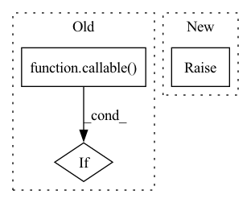

Pattern ID :13498
Before Change
// https://github.com/scikit-learn/scikit-learn/blob/844b4be24d20fc42cc13b957374c718956a0db39/sklearn/metrics/_scorer.py//L421
if isinstance(scorer, str):
return get_scorer(scorer)
elif callable( scorer) :
// Check that scorer runs for given model and data
assert isinstance(scorer(model, dataset.data[dataset.features].head(2), dataset.label_col.head(2)),
Number)After Change
f"but got: {kind}")
else:
if not isinstance(result, Number):
raise errors.DeepchecksValueError(f"Expected scorer {scorer_name} to return number "
f"but got: {type(result).__name__}")
In pattern: SUPERPATTERN
Frequency: 3
Non-data size: 3
Instances Fragment ID: 45479029
Project Name: deepchecks/deepchecks
Commit Name: ceba2ede21ffee18180dd683b9ac4dbe441c380e
Time: 2021-12-21
Author: matanper@gmail.com
File Name: deepchecks/utils/metrics.py
M Class Name: AnonimousClass
N Class Name: AnonimousClass
M Method Name: validate_scorer(5)
N Method Name: validate_scorer(3)
M Parent Class:
N Parent Class:
M File Name: deepchecks/utils/metrics.py
N File Name: deepchecks/utils/metrics.py
M Start Line: 174
M End Line: 191
N Start Line: 236
N End Line: 258
Before Change
properties[image_property].extend(
getattr(image_formatters, image_property)(images)
)
elif callable( image_property) :
properties[image_property.__name__].extend(image_property(images)) // pylint: disable=not-callable
else:
raise DeepchecksValueError(After Change
def scoring_func(predictions, labels):
return per_sample_mean_iou(predictions, labels)
else:
raise DeepchecksValueError(f"Unsupported task type {dataset.task_type}")
if isinstance(predictions, torch.Tensor):
predictions = predictions.cpu().detach().numpy() Fragment ID: 45479025
Project Name: deepchecks/deepchecks
Commit Name: aebd6ccd8dfe6d09f76c6c96f9dbefb92c941e1d
Time: 2022-03-14
Author: matan@deepchecks.com
File Name: deepchecks/vision/checks/performance/model_error_analysis.py
M Class Name: ModelErrorAnalysis
N Class Name: ModelErrorAnalysis
M Method Name: update(4)
N Method Name: update(4)
M Parent Class: TrainTestCheck
N Parent Class: TrainTestCheck
M File Name: deepchecks/vision/checks/performance/model_error_analysis.py
N File Name: deepchecks/vision/checks/performance/model_error_analysis.py
M Start Line: 115
M End Line: 132
N Start Line: 108
N End Line: 122
Before Change
elif self.method == "density":
loss = 1./(torch.exp(torch.mean(vals**2))+1)
elif callable( self.method) :
loss = nn.MSELoss()
target = torch.tensor(self.method(pos.detach().numpy()))
return loss(vals,target)After Change
loss = self.wf.energy(pos)
else:
raise ValueError("method must be variance, energy")
return loss
Fragment ID: 45479023
Project Name: nlesc-jcer/qmctorch
Commit Name: 3f224d17a7a179f040a17490a73723d1388f2e09
Time: 2019-08-16
Author: nicolas.gm.renaud@gmail.com
File Name: deepqmc/solver/torch_utils.py
M Class Name: Loss
N Class Name: Loss
M Method Name: forward(2)
N Method Name: forward(3)
M Parent Class: nn.Module
N Parent Class: nn.Module
M File Name: deepqmc/solver/torch_utils.py
N File Name: deepqmc/solver/torch_utils.py
M Start Line: 25
M End Line: 42
N Start Line: 34
N End Line: 34